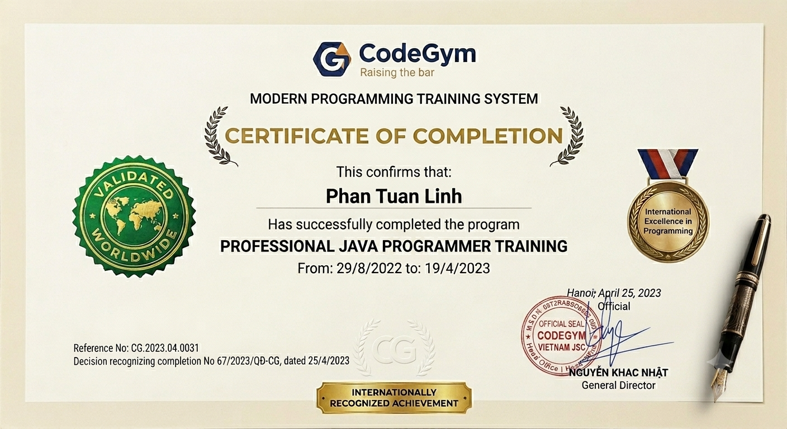

Trace the request
Every feature starts as a request flow: who calls it, what can fail, where state changes, and what must be observable.
I design production-minded APIs and maintainable services, where clean architecture, secure defaults and business value meet.
Build calmly. Ship clearly. Leave the system easier to understand than when you found it.
01engineer:
02 name: "Phan Tuan Linh"
03 focus: "Backend Systems"
04 principles:
05 - reliability
06 - maintainability
07 - security_by_default
08status: ready_to_build
01 / ENGINEERING PRINCIPLES
Good software is not just code that works. It is a system people can understand, trust and evolve.
02 / ENGINEERING PHILOSOPHY
My signature is not noise. It is clear boundaries, honest failure handling, and systems a teammate can trust at 2AM.
Every feature starts as a request flow: who calls it, what can fail, where state changes, and what must be observable.
PostgreSQL/MySQL schemas, validation rules and API responses should say the same thing in different layers.
Kafka, Redis and background jobs are not decoration; they protect user experience when work becomes asynchronous.
02 / TECHNICAL TOOLBOX
A practical stack for taking services from a blank repository to observable production.
03 / SELECTED SYSTEMS
Beyond features: the decisions, trade-offs and architecture behind each system.
04 / LEARNING JOURNEY
A deliberate path from programming fundamentals to designing production-ready systems.
“Every system teaches you where your mental model was incomplete.”

CERTIFICATE
CodeGym certificate of completion for the Professional Java Programmer Training program, completed from 29/8/2022 to 19/4/2023.
View certificateLET'S BUILD SOMETHING RELIABLE
I am ready to contribute, learn fast and ship software that holds up beyond the demo.
skyfreedom45@gmail.com ↗